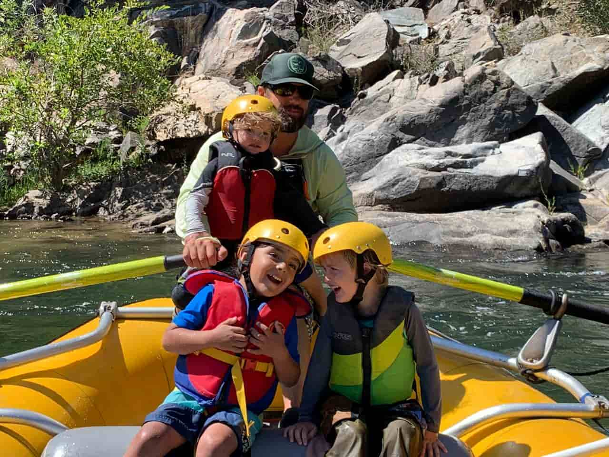
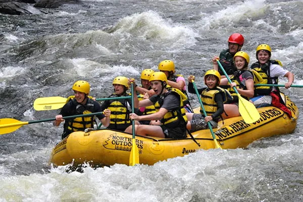
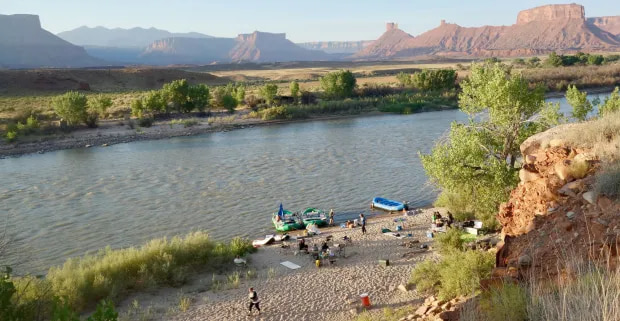

The Sunny Creek Float
Perfect for families and first-time rafters! Enjoy a relaxing day floating down Sunny Creek with class I-II
rapids. This gentle trip focuses on scenic beauty, wildlife spotting, and learning basic paddling
techniques.
It's a great introduction to the river life.

The Canyon Charger
Ready to feel the spray? The Canyon Charger takes you through the heart of the Upper Gorge, featuring
exciting
Class III rapids and breathtaking canyon views. This is an ideal trip for those with some prior experience
or
anyone looking for a solid adrenaline rush.

The Wilderness Expedition
An immersive two-day, one-night experience for the true adventurer. We navigate challenging Class IV
sections,
camp under the stars, and enjoy gourmet riverside meals. This trip requires good physical condition and a
desire
for an unforgettable wilderness escape.